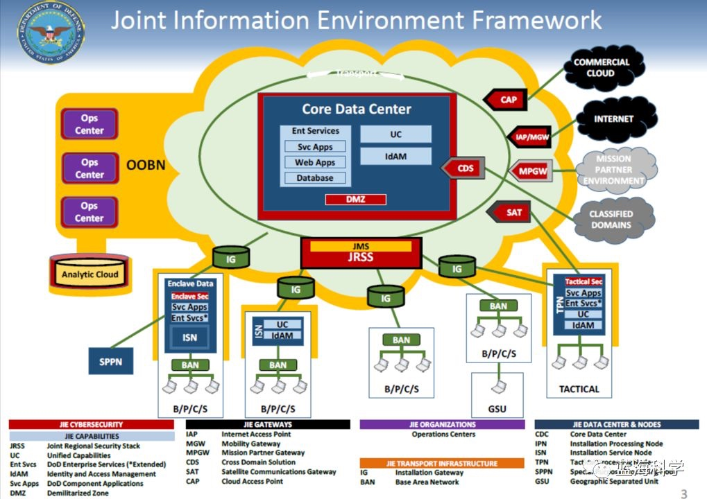
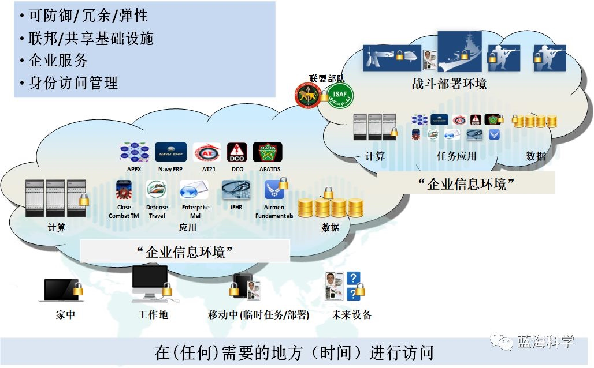

原文：https://mp.weixin.qq.com/s/9VK8KFKF_ikSL2NBS8H3Mg
按语：久等了。我打算同步编写两个系列：一是“美军网络安全”系列；二是“安全自动化”系列。这是“美军网络安全”系列的第一篇。
一、为何研究美军网络安全技术？
美军技术是美国技术的先导； 美国技术是世界技术的先导。
二、做网络安全，不能缺乏对网络的理解。
从美军网络安全防护领导机构说起：
在 2010 年之前，由 DISA（美国国防信息系统局）局长负责指挥网络防御作战已有十余年的历史。
然而，在 2010 年，DISA 的网络安全防护职能移交给了新成立的美军网络司令部。
但是，在 2015 年，DISA 局长兼任国防部信息网络联合部队司令部（JFHQ-DoDIN）司令，负责防御性网络空间作战，标志着 DISA 加入作战指挥序列，再次统领美军的网络安全防护。
美军的网络安全防护为什么重新由 DISA 统领？根本原因是网络安全防护必须以对网络的深刻理解为基础。 DISA 长期负责 DoDIN 的建设和运维，从设计理念到运维细节， DISA 是美军最清楚国防部信息网络（DoDIN）的部门。 2016 年 5 月，美军网络司令部作战部部长承认，在美军网络司令部组建网络安全防护力量的过程中，一个重要教训是：缺乏对网络的理解。
三、美国有哪几个网络值得学习？
美国政府目前主要有 3 种网络模型作为参考：
- 国防部联合信息环境（JIE）：该网络旨在建立标准化的服务和管制措施，将更多数据控制在受保护的环境中，并利用49个联合区域安全栈（JRSS）限制与公共网络的连接。联合区域安全栈（JRSS）扮演了国防网络与全球互联网之间网关的角色。
- 情报界信息技术企业（IC ITE）：该网络耗资数十亿美元，包括建立共用传输和安全层，实现情报界 IT 服务的协调一致和标准化；
- 国土安全部 OneNet：它是一种集中式的虚拟网络结构，将国土安全部下属的 7 大主要部门和 15 个子部门连接在一起。
从普适性、可参考性、研究资料的可获取性等角度综合考虑，我们将联合信息环境（JIE）作为首要研究对象。
四、JIE（联合信息环境）概述
- JIE 的预期效果：

- JIE（联合信息环境）概念 & 意义：
联合信息环境（JIE， Joint Information Environment）：是一个单一、联合、安全、可靠和敏捷的指挥、控制、通信和计算企业信息环境。
美军目标： JIE 将包含所有国防部网络，在 2020 年前，利用 JIE 使所有军种实现互联互通，以安全、高效的方式为作战人员提供所需的信息服务，实现“三个任意”的愿景——美军作战人员能够基于任意设备、在任意时间、在全球范围的任意地方获取所需信息，以满足联合作战的需求。
主要目的：通过减少基础设施和人员配置来提高运营效率，增强网络安全性，节省资金。
重要意义：从 GIG（全球信息栅格）到 JIE，意味着美军基础设施的建设模式从部门间相互协同转变为真正的一体化，美军从“以网络为中心”转变为“以数据为中心”。
主要特点：数据统一（核心数据中心集），网络统一（一个网络），系统统一（全面标准化）。
关键优势：将军事网络延伸到战术前沿。
JIE 为整个国防部构建的关键能力：
- SSA（单一安全架构）；
- 网络规范化：提供一个安全、可靠、无缝连接作战人员的单一、受保护的信息环境；
- IAM（身份与访问管理）：优化的全局身份、认证、访问控制和目录服务，是满足作战人员对便携式身份的需求以及在组织间共享联系信息的能力的核心；
- 企业服务：是像电子邮件的服务，以通用方式在整个部门中提供，由作为企业服务提供者的单个组织提供；
- 云计算：国防部向云计算的迁移带来了挑战；
- 数据中心整合：国防部将继续通过关闭和整合整个国防部的数据中心来整合计算能力，同时确定现有的数据中心将转变为 JIE 核心数据中心（CDC）。
五、JIE（联合信息环境）整体框架
JIE 整体框架： （本系列下一篇将展示汉化版）
JIE现代化领域：
- 网络现代化
- 光载波升级
- 多协议标签交换（MPLS）
- 网络安全体系结构
- 联合区域安全栈（JRSS）
- 联合管理系统（JMS）
- 边界、网络、数据、端点安全
- 企业运营
- JIE 管理网络（JMN）
- 网络指挥控制（C2）
- 计算与存储
- 数据中心整合
- 云
- 企业服务
- 国防企业电子邮件
- 协作能力
- 通用应用
- 任务伙伴环境（MPE）
- 联盟信息共享
- MPE信息系统（MPE-IS）
- 身份和访问管理（IdAM）
- 动态访问和实体发现
- 活动监控
- 移动性
- 国防移动非涉密能力
- 国防移动涉密能力
- 网络现代化
JIE 研究思路：
系统性方法：根据JIE整体架构图，结合JIE现代化领域，遵循与网络安全的相关性，挑选重点领域，逐一开展研究。